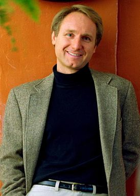

Дэн Браун родился 22 июня 1964 года в Нью-Гэмпшире (США) в семье Ричарда (Дик) Брауна и Констанции (Конни) Браун. Отец Брауна, Ричард, был преподавателем математики и музыкантом. Он стал профессором и работал в Академии Филлипса.Мать писателя, Констанция, посвятила жизнь музыке и играла на органе в Епископальной церкви.
В семье Дэна Брауна шарады и загадки были обычным делом. Дэн, его брат Грегори и сестра Валери никогда не находили подарки под елкой. Вместо этого их ждала карта с отмеченными местами для поиска сокровищ или стихи с зашифрованным посланием. Разгадывая загадку за загадкой, дети переходили из комнаты в комнату и находили клад или составляли слово с названием подарка. Дэн Браун написал свое самое первое произведение в детстве, это была книжка под названием «Жираф, свиньи и штаны» Он посвятил ее своей матери. «Книга» вышла в одном экземпляре. Об этом рассказал сам Браун – в лекции 2014-го года.В 13 лет Дэн понял, что наука и священное Писание входят в противоречие между собой, и стал задаваться вопросом – какая история верна.Дэн Браун учился в Академии Филлипса, Амхерстском колледже и один курс – в Севильском университете.
Школа Филлипс-Эксетер, которую окончил Дэн Браун, – закрытая частная школа. Сейчас в ней учатся молодые люди из 29 стран мира. Происходящее в стенах учебного заведения скрыто от чужих глаз, что уже напоминает тайное общество.
После школы Дэн Браун поступил в колледж Армхерст, проведя последний год обучения в Севильском университете в Испании. Будущему писателю был 21 год, оставшуюся жизнь он собирался заниматься музыкой. В Севилье он записался на курс лекций по предмету, в котором слабо разбирался, – история искусств. На одной из лекций произошло событие, изменившее жизнь Дэна Брауна. Во время занятия, посвященного творчеству Леонардо да Винчи, преподаватель показывал слайды с репродукциями и обращал внимание студентов на странные детали, зашифрованные сообщения или неточные трактовки. Тогда Дэн Браун увидел, что в «Тайной вечере» на столе нет чаши с вином, а сидящий рядом с Иисусом Иоанн больше похож на Марию Магдалину. Позже он писал: «Для специалистов в области истории искусства это не было каким-то откровением, однако для большинства из нас идея тайных посланий, зашифрованных в великих картинах, стала грандиозным открытием». С той поры в рисунках и картинах великого итальянца Дэн искал и находил тайные знаки, шифры и послания.
Закончив обучение в колледже, Дэн Браун сделал ставку на музыкальной карьере в качестве автора песен, музыканта и исполнителя. Браун выпустил несколько компакт-дисков (CD) со своими записями. В 1993 году Дэн Браун отошел от музыкальных дел (на его счету несколько дисков, он неплохо пел и сочинял отличные тексты, но не любил выступать с концертами) и устроился преподавать английский в Эксетере. Спустя два года вышла его первая юмористическая книга «187 мужчин, от которых следует держаться подальше: справочник по выживанию для романтически разочарованных женщин». Издателям удалось продать несколько тысяч экземпляров. Сам Браун неохотно вспоминает свой литературный дебют: «Это была глупенькая юмористическая книжка, и ее название навсегда останется моей тайной. Ее больше не печатают и правильно делают». Тогда же Браун выпустил свой последний диск, лебединую песню «Ангелы и демоны».

Дэн Браун встает в 4 утра и сразу садится за письменный стол.На столе писателя стоят старинные песочные часы. Когда приходит время их переворачивать, Дэн Браун встает и делает разминку, приседает и отжимается от пола. Если разминка не помогает, в ход идет другое приспособление – гравитационные башмаки. Дэн забирается на стойку тренажера и висит вниз головой, как летучая мышь, от пяти до десяти минут. «Тем самым мне удается обеспечить приток крови к мозгу и взглянуть на мир под несколько непривычным углом. Когда я нахожусь в такой позе, мне порой удается решить очень важные проблемы».
Первая книга Брауна – триллер «Цифровая крепость» – увидела свет в 1998-м году.Замысел романа возник весенним утром 1995 года. На пороге частной школы, где преподавал Браун, появились агенты секретной службы. Они предъявили удостоверения и сообщили директору, что один из учеников представляет угрозу национальной безопасности Соединенных штатов. Оказалось, парень отослал со школьного компьютера электронное письмо другу. Он жаловался на политическую ситуацию в стране, ругал правительство и даже признался, что «готов убить Клинтона». Эту фразу и выловило Агентство национальной безопасности в огромном потоке электронной почты. Угроза оказалась шуткой, но сам факт контроля переписки со стороны служб Брауна заинтересовал. Он начал изучать проблему электронной слежки, работу поисковых систем, криптографию и сбор разведывательных данных. Причем, чем больше он исследовал, тем сильнее менялось его отношение в ней. Вначале он полагал слежку вмешательством в личную жизнь граждан, а к концу работы – заботой об их безопасности. Чтобы писать роман, Дэн вставал в четыре утра и успевал написать несколько страниц до начала уроков в школе.
Толчком к написанию романа «Ангелы и демоны» тоже стала случайность. Дэн и его супруга Блайт путешествовали по Европе, собирая материал для нового романа. Во время экскурсии по Ватикану им показали «Иль пассетто» – тайный коридор, в котором папа мог скрыться из своей резиденции, если Святому престолу будет угрожать опастность. Экскурсовод упомянул, что злейшим врагом Ватикана за всю его историю было тайное общество иллюминатов – группа ученых, желавших отомстить за преследования Галилея, Коперника и других мучеников науки. Впервые услышав слово «иллюминаты» Дэн понял, что они и будут героями следующего романа.Сведения о том, как кардиналы избирают нового папу, Дэн Браун нашел в очень редкой книге. Это исследование одного теолога-иезуита, составленное из бесед с более чем сотней кардиналов. Когда в 2005 году папа Иоанн Павел II завершил свой земной путь, миллионы людей в мире узнали о ритуалах и церемониях, которые проводит конклав кардиналов, о том, что бюллетени сжигают и идет цветной дым, какую еду подают кардиналам, пока их держат взаперти до принятия решения. Журналисты, освещая избрание нового папы, использовали сведения из романа «Ангелы и демоны».
Заставка к фильму "Ангелы и демоны". Экранизация фильма была 4 мая 2009 года.
Все произведения Вы сможете прочитать или прослушать здесь.